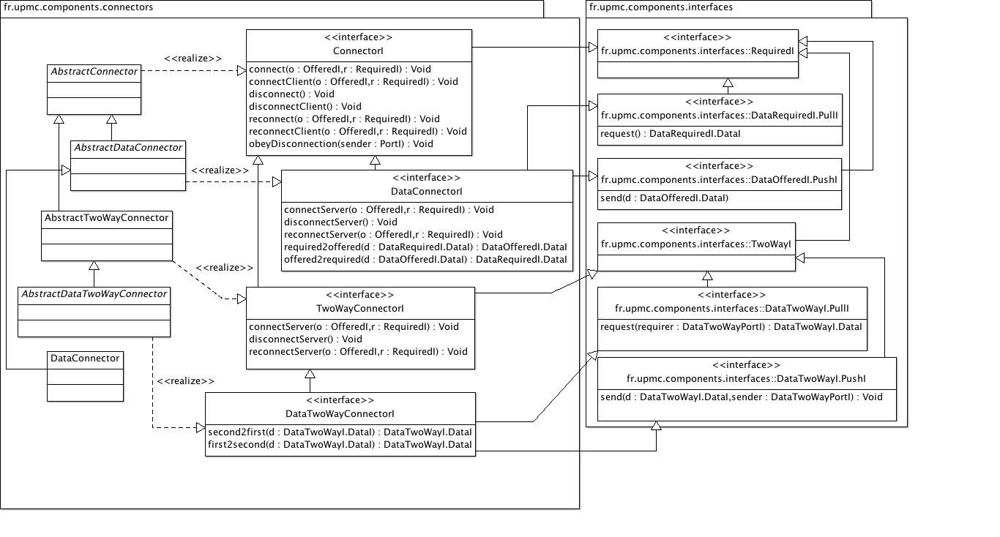

Hierarchy of connector objects to assemble components.
| Licence |
|---|
|
Copyright Jacques Malenfant, Sorbonne Universite. Jacques.Malenfant@lip6.fr This software is a computer program whose purpose is to provide a basic component programming model to program with components distributed applications in the Java programming language. This software is governed by the CeCILL-C license under French law and abiding by the rules of distribution of free software. You can use, modify and/ or redistribute the software under the terms of the CeCILL-C license as circulated by CEA, CNRS and INRIA at the following URL http://www.cecill.info. As a counterpart to the access to the source code and rights to copy, modify and redistribute granted by the license, users are provided only with a limited warranty and the software's author, the holder of the economic rights, and the successive licensors have only limited liability. In this respect, the user's attention is drawn to the risks associated with loading, using, modifying and/or developing or reproducing the software by the user in light of its specific status of free software, that may mean that it is complicated to manipulate, and that also therefore means that it is reserved for developers and experienced professionals having in-depth computer knowledge. Users are therefore encouraged to load and test the software's suitability as regards their requirements in conditions enabling the security of their systems and/or data to be ensured and, more generally, to use and operate it in the same conditions as regards security. The fact that you are presently reading this means that you have had knowledge of the CeCILL-C license and that you accept its terms. |
Connectors are used to make the bridge between two ports exposed by two components. Basically, a connector is linked to the two ports and relay the calls from the one to the other. Different types of connectors are proposed to match the different kinds of interfaces.
The most generic connector, which basic behaviours are declared in
ConnectorI and defined in AbstractConnector, connects
a client component CC exposing a required
interface R on a outbound port OP (calls go out of the component through this
port) to a server component SC exposing an offered interface O on an inbound
port IP. As such, the connector is assumed to implement the required interface
R (to receive calls from the client) and to call the server component on its
offered interface O. The interfaces being user-defined, a connector class
must be implemented to do so. The class AbstractConnector
provides for the connection logic used by the class
ConnectionBuilder that takes the two ports and the connector and
performs the connection per se.
Data connectors are used to connect client and server components that exchanges
data through data interfaces. As data interfaces may use standard pull and
push interfaces, a full implementation of a standard connector can be given.
The is the role of the class DataConnector.
Two-way connectors and data two-way connectors are similar to connectors and
data connectors respectively, but for two-way interfaces. Hence, a two-way
connector must be implemented as a subclass of the class
AbstractTwoWayConnector that will implement the user defined
two-way interface, while for data two-way connectors, a standard implementation
can be provided if the standard data two-way push and pull interfaces are used.
This is the role of the class DataTwoWayConnector.
Usage
Connectors are instantiated from standard connector classes of user-defined
and then connection is dynamically performed by calling the method
connectWith from the class ConnectionBuilder for which
a singleton object is created and stored in the static variable
ConnectionBuilder.SINGLETON. The connectWith method
takes three arguments : the inbound port (server-side), the outbound port
(client-side) and the connector. Hidden in the method code is the logic that
takes care of the different kinds of connection, e.g. local connection in the
same virtual machine if the two components are co-located, or a RMI connection
if the two components reside in different JVM. Hence, it provides the
location-transparency to the connection logic. A method
disconnectWith allows to properly disconnect previously connected
components.
Here is a UML class diagram of the package:
